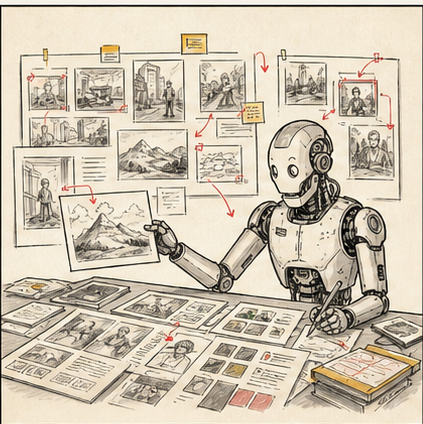
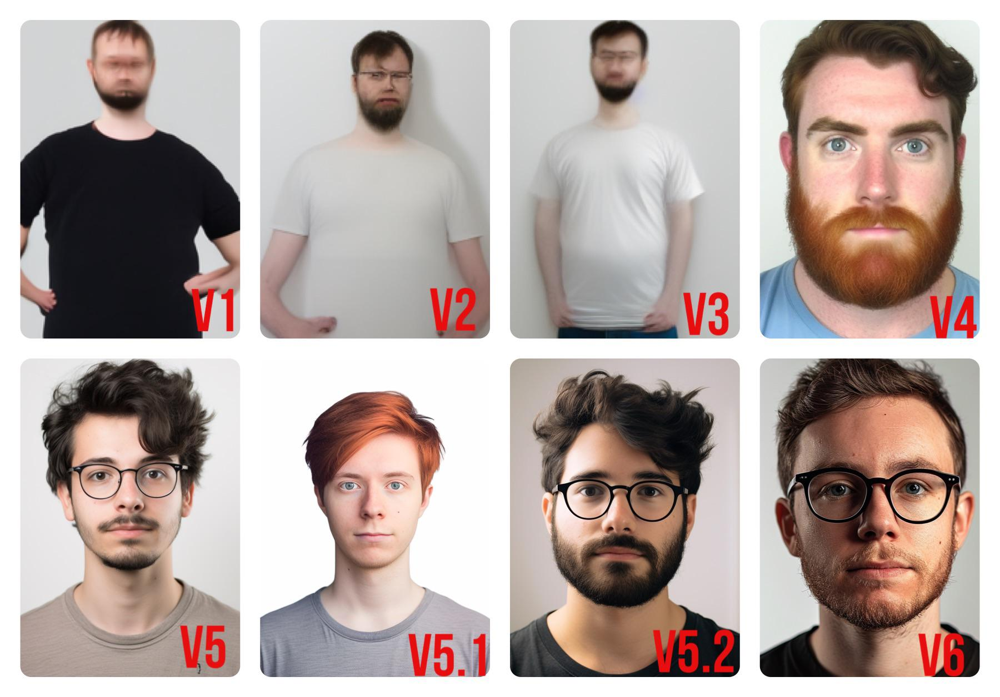
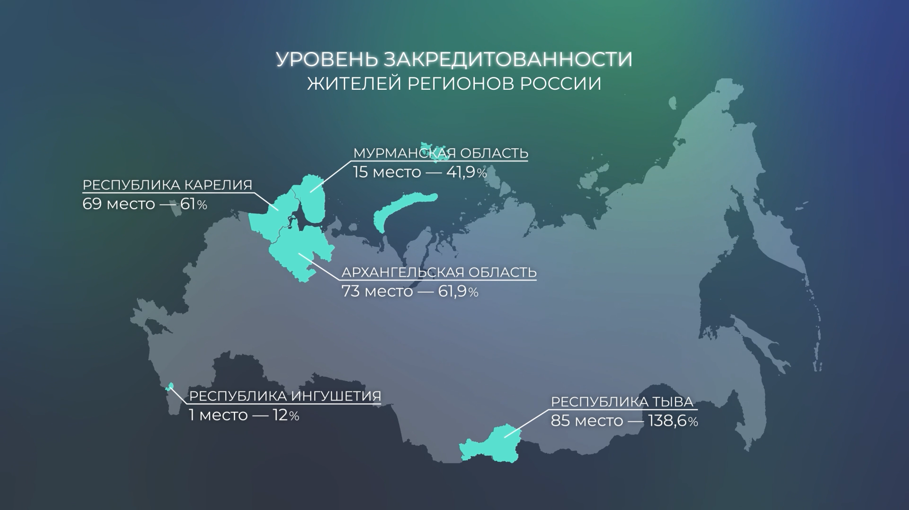
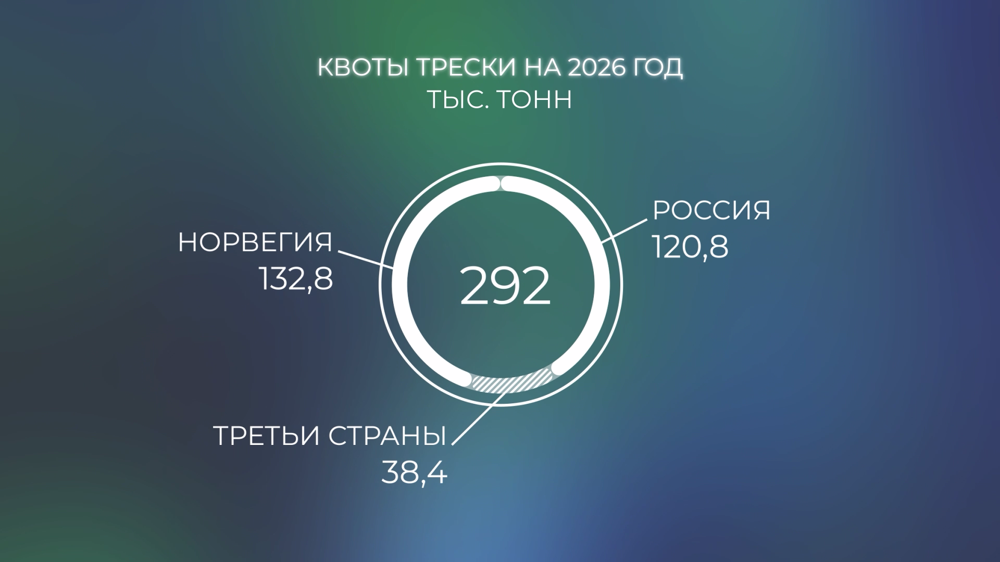
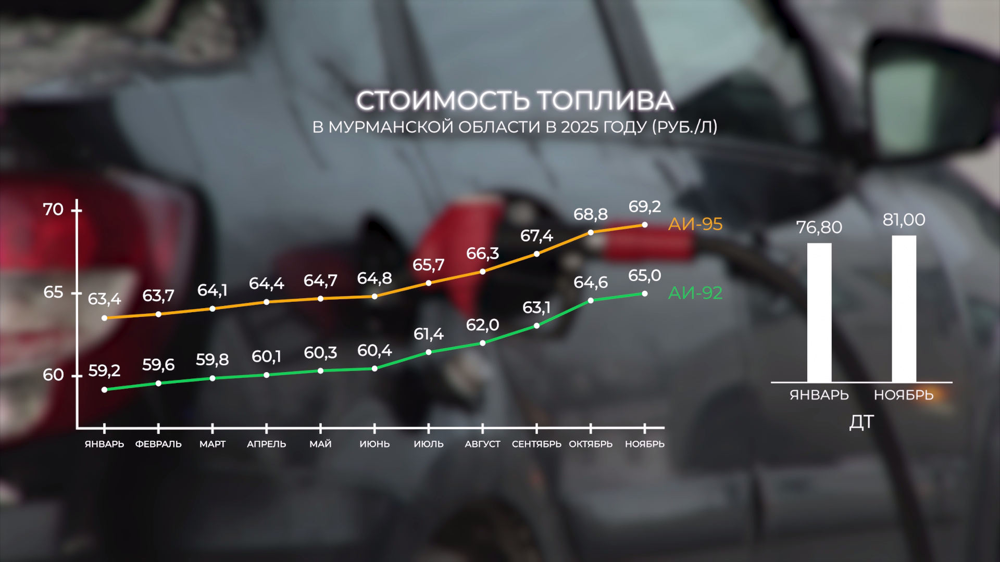
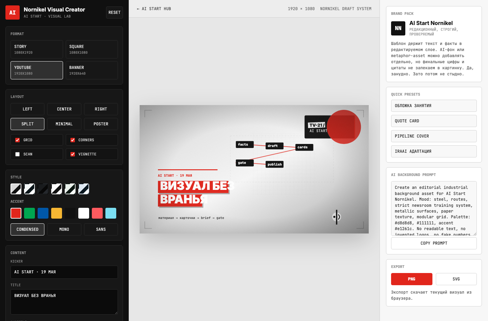

быстрый вход
Готовые интерфейсы для картинок, видео, captions, клипов и visual assets.
Сначала используем готовые сервисы, затем собираем повторяемый визуальный процесс, после этого переходим к видео и завершаем практикой реального продакшена.


Готовые интерфейсы для картинок, видео, captions, клипов и visual assets.
Полный промпт анализа стиля разбирает цвет, свет, композицию, фактуру и recipe for series.
Агент, skill, MCP/API, Higgsfield, visual lab и правила повторения.
Транскрипт, смысловая карта, хуки, candidates, brief и fact-check.

Открыли интерфейс, загрузили материал, получили первые варианты.
Подходит для быстрого теста, поиска направления и демонстрации возможностей.Каждый раз нужно заново идти в сервис и руками собирать промпт.
Часть стиля можно сохранить, но повторяемость всё равно держится на человеке.ImagineArt и Recraft дают бесплатные кредиты или бесплатный тариф для первых тестов.
PixVerse дает ежедневные кредиты; Kling часто дает ограниченный бесплатный вход.
NotebookLM можно использовать бесплатно; тарифа хватает для источников и транскриптов.
Конкурсы AI-видео вроде Project Odyssey иногда дают пакеты доступов к нейросетям.



Факты, цифры, имена, должности и титры должны оставаться проверяемыми слоями.
You are an art director with 15 years of experience in fashion and advertising.
I'm uploading an image. Analyze its DNA like a professional.
В полном файле: COLOR, LIGHT, COMPOSITION, TEXTURE, MOOD, REFERENCES, detailed breakdown, recipe for series и one-line tags.
что фиксируемразмеры, сетку, шрифты, цвета, типы карточек и ограничения
что делает агентсобирает HTML-конструктор и адаптирует его под редакционный формат
что отдаюгайд по visual lab и рабочий пример конструктора
материалдлинный ролик, эфир, интервью, сюжет, запись встречи или транскрипт
анализчто происходит в кадре, что считывается за кадром, где смысловые блоки
нарезка3 сюжета, хуки, candidates, top-3 и риски потери контекста
инструментGemini / Claude / ChatGPT / NotebookLM / Opus / Submagic / Gling / агент
Я загружаю длинное видео. Мне нужно не краткое содержание, а профессиональный редакционный разбор материала для производства коротких новостных сюжетов.
В полном файле: что происходит в кадре, что считывается за кадром, смысловая карта, 3 новостных сюжета, лучший вариант, production brief и fact-check list.Видео, транскрипт, источники, смысловые блоки и справка к материалу.
Поиск фрагментов, captions, вертикальные версии и публикационный пакет.
Паузы, лишние дубли, текстовый монтаж и быстрый черновик.
Image-to-video, b-roll, motion seed, визуальные вставки и тесты движения.
Видео → транскрипт → полный промпт → карта сюжетов.
открыть video promptВидео в папку → агент анализирует, предлагает нарезку и готовит brief.
открыть большой гайд по пайплайнукак мыслит монтажер и режиссер
где нейросети ускоряют, а где мешают
как выбирать фрагменты, хуки и ритм
что проверять перед публикацией
Показывает исходник: видео, транскрипт, ограничения, цель публикации.
Собирает candidates, хуки и top-3 с рисками потери контекста.
Показывает rough cut / captions / reframe / cover logic.
Формирует публикационный пакет и проходит video gate.
визуалтекст и цифры не запекаются в картинку
видеоhook не обещает больше, чем исходник дает
монтажобрезка не меняет позицию героя
правапроверяем, что можно загружать и публиковать
Снимите стиль изображения полным visual prompt. По видео сделайте транскрипт, вставьте video prompt в Gemini / Claude / ChatGPT и получите план нарезки.
Сохраните стиль, подключите Higgsfield через MCP, сделайте серию картинок или video assets в одном стиле, затем оформите это как skill.
Создайте visual constructor и агентный видео-пайплайн: файл в папку, агент анализирует, находит хуки, предлагает монтаж и готовит brief.